Launch / introduction
Original table-based email layout. Important messaging remains live text; client and dark-mode rendering are not verified.
09 / GRAPHIC DESIGN — CREATIVE PRODUCTION — 2026 / SELF-INITIATED STUDIO SPECIMEN
The art of getting it right.
One production philosophy. Three radically different creative voices.
PROOF is an experimental graphic design studio concept: print-ink advertising, a twelve-page editorial journal and a practical architectural-materials label system. The work is designed, revised and prepared with clarity—then examined in a working review laboratory.
Fictional projects, original vector artwork and AI-assisted implementation. No commercial clients, measured performance or physical print sign-off.
A graphic designer needs to make distinctive work—and make sure the correct version survives production.
The earlier PROOF prototype showed approval states but offered limited graphic-design evidence. This edition turns the portfolio experience around: artwork comes first; design systems, source files, revisions and release criteria reveal the care behind it.
Each fictional commission has its own brief, industry and visual grammar. Together they demonstrate art direction, campaign adaptation, typography, publication pacing, production information and asset control without treating one giant poster as the entire portfolio.
A creative studio should be able to adapt its judgment without repeating the same formula.
These are fictional assignments created to demonstrate different technical and artistic requirements: emotional campaign impact, sequential editorial communication and accurate production artwork.
A fictional print-ink collection aimed at independent makers. This campaign uses overlapping ink shapes, registration textures, energetic movement and type at several reading distances. The result is deliberately expressive—not a template of headline-on-solid-background posts.
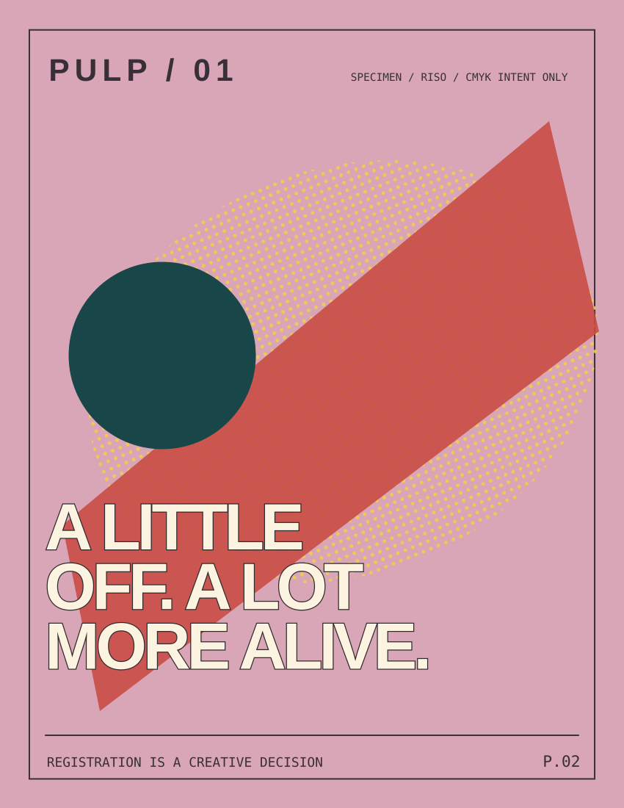
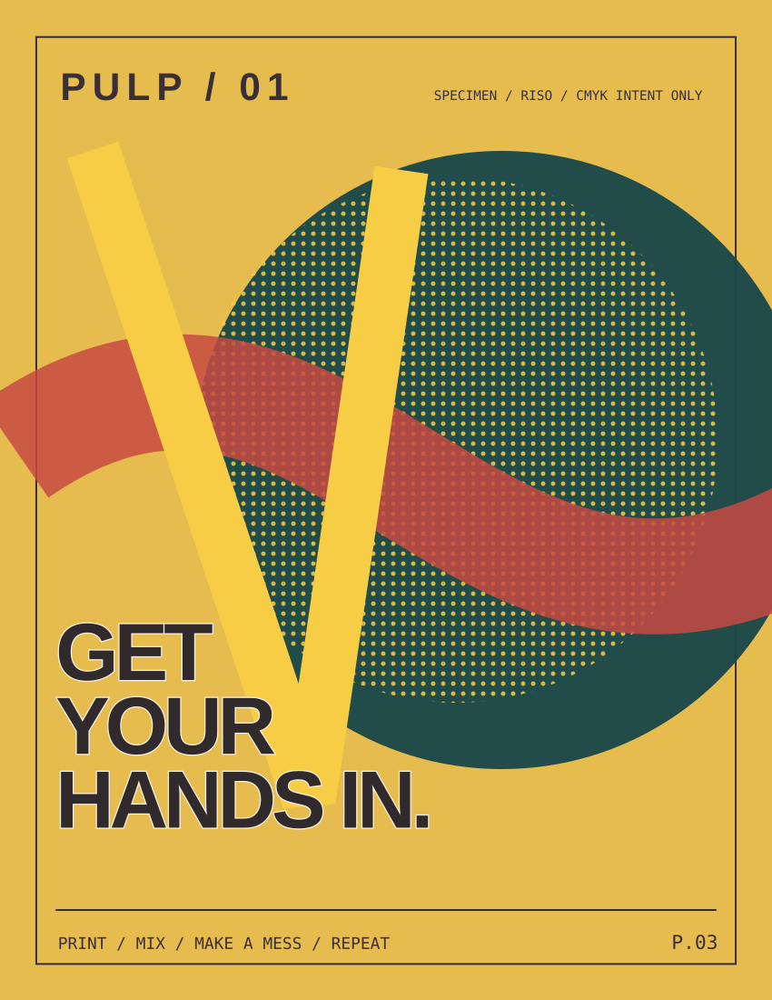

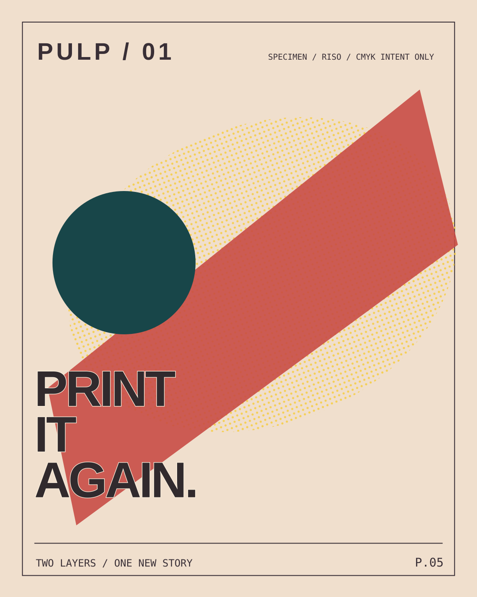
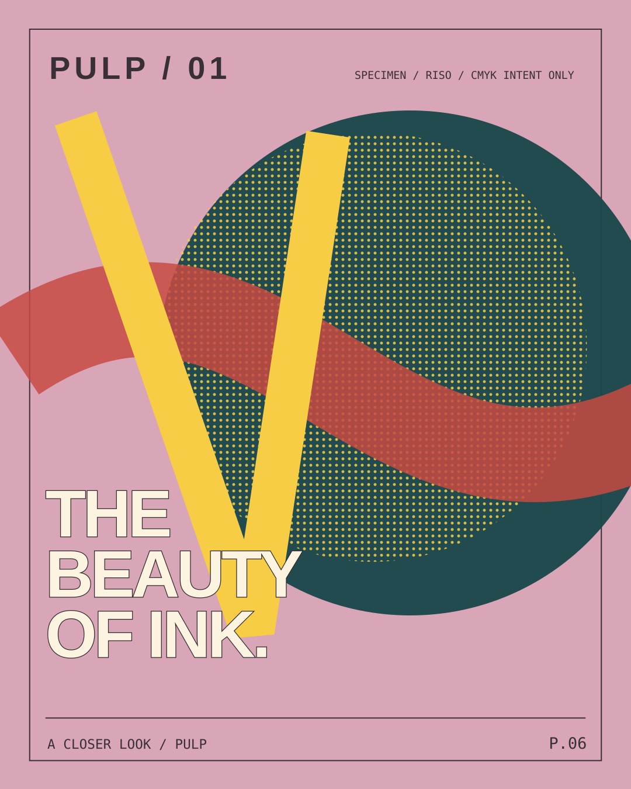
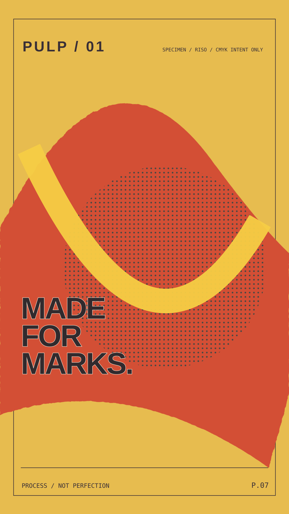
A real identity needs rules beyond a hero graphic. This downloadable, editable A4 standards sequence covers positioning, typography, color, compositional logic, intentional experimentation, mobile adaptation, file naming and common misuses. Open any page to inspect the vector source.
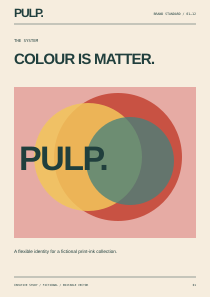
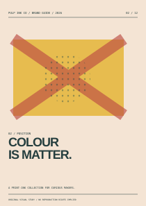
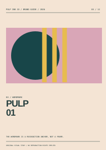
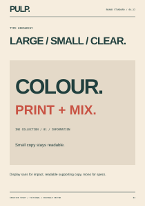
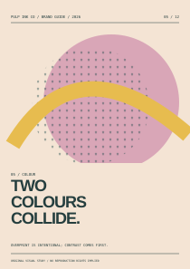
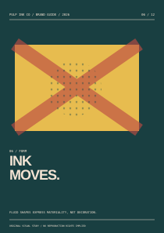
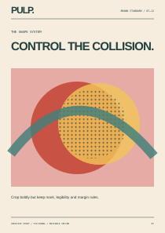
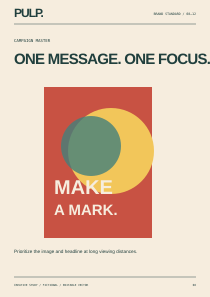
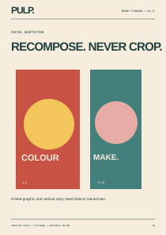
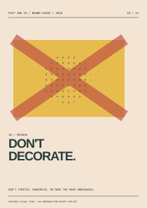
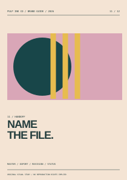
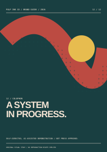
Three different real-HTML compositions carry the fictional brand from announcement to education to process. Their content is editable, image-independent HTML with plain-text equivalents. Email client compatibility and compliant sending infrastructure remain untested.
Original table-based email layout. Important messaging remains live text; client and dark-mode rendering are not verified.
Original table-based email layout. Important messaging remains live text; client and dark-mode rendering are not verified.
Original table-based email layout. Important messaging remains live text; client and dark-mode rendering are not verified.
Graphic design evidence: Compositions adapt by message and format. The halftone and overprint look is an on-screen creative simulation; actual risograph separations, ink opacity and paper registration are not claimed. Typography and drawn shapes remain editable.
Inspect a revision ↗A 12-page A5 specimen journal about surface, pressure, intervals and revision. Quiet serif typography, tactile abstract imagery and a restrained material palette contrast with PULP's noisy campaign. Each page is an actual editable vector composition with distinct pacing and original sample text.
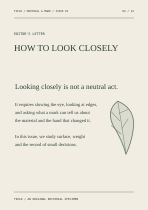
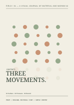
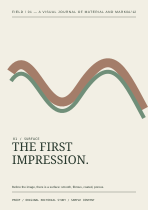
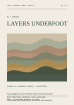
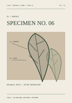
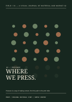
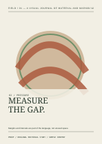
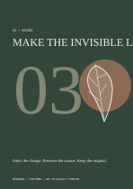
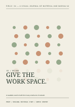
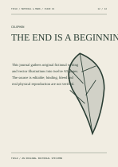
Production note: These are individual A5 page masters, not an imposed press signature or a bound physical book. Sample typography, paper choice and binding need real-size and printer review. The written content is original conceptual copy.
A fictional architectural ceramics supplier needs a legible three-finish label family, an information-focused sell sheet and a print advertisement. Accurate production thinking is the point: consistent specimen identifiers, clear revision history and vendor questions, all within a separate restrained commercial identity.
90 × 130 mm provisional label trim / 3 mm sample bleed.
Variant, nominal measurement, fictional SKU and revision identified.
Mist R01/R02 remain accessible; R03 is the concept-current specimen.
Vendor color conversion, real materials, dielines and approval pending.
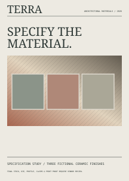
Critique is more useful when it points to something specific.
Compare original design states, then inspect a branding issue. The controls below alter visible artwork and feedback locally. They do not communicate with a real client or automatically assess a file.
Slide from one campaign exploration to the approved-in-concept direction. The original is a different composition, not a fictitious client-approved version.
What changes: dominant image placement, headline placement, overprint character and reading order. Neither version is a real client submission.
Use the reviewer buttons to examine simulated brand-compliance issues and see an explanatory finding. This is a curated manual inspection demonstration—not an automated image analysis engine.
The label concept uses a protected top band. Real minimum clear space and final mark-size checks require a physical print proof.
Action: check 1:1 print reproduction.
A plausible spec sheet is not the same as a printer-approved file.
Explore how the intended trim, image-safe region, copy checks and revision tracking fit together. The drawing is a specimen; the indicated guides demonstrate prepress concepts rather than a verified manufacturing die.
These toggles overlay conceptual guides onto the TERRA SVG label. The document is 96 × 136 mm including 3 mm provisional bleed for a planned 90 × 130 mm trimmed label.
Checking boxes demonstrates a local workflow; it does not make any artwork commercial print-ready. A real vendor must still confirm die tolerances, color profile, product claims, bleed, stock and proof.
Art direction gets stronger when it understands the system behind its references.
Selected verified starting points informed three different strategies: printing as a material act, editorial rhythm as storytelling, and pragmatic identity systems that carry information across formats. Nothing is reproduced from the referenced studios.
Overprinting, registration, surface and handmade detail guided the layered PULP commission.
Explore the Pinterest pin ↗Editorial pacing, varied illustration and readable publishing systems informed FIELD's quiet sequence.
Studio case study ↗A system useful across paper stock, promotional items and communication formats informed TERRA's material-led production thinking.
Studio case study ↗Pinterest search results also surfaced experimental risograph typography, packaging-specimen layouts and architecture-supply label systems. This case study cites only links actually retrieved, not a claimed 30-image research board. Source links are research, not licenses to copy.